Plataforma de Monitoreo y Seguridad Satelital
Mantén el control total de flotas, maquinaria y activos con precisión milimétrica. Nuestra tecnología te permite visualizar toda tu flota en una sola pantalla, con sensores avanzados y reportes automatizados.
Acceso a Plataforma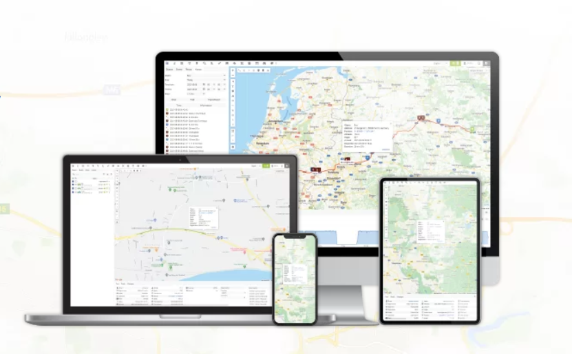
Soluciones Especializadas
Control de Flotas
Obtén datos críticos como posición, indicadores, desvíos de rutas y consumo de combustibles. Administra tu empresa de transportes de forma eficiente.
Control de Maquinarias
Monitorea constantemente tus activos en obras de construcción. Gestiona recursos para culminar tus proyectos a tiempo y rentabilizarlos al máximo.
Control Cadena de Frío
Mantén la temperatura adecuada. Detecta desviaciones en tiempo real para evitar pérdidas de mercadería a través de nuestros sensores especializados.
Monitoreo por Video
Sistema 360° para visualización total del vehículo. Elimina puntos ciegos, resguarda la carga y supervisa el entorno con cámaras de alta definición.
GPS Solar
Localización autónoma ideal para oficinas de obra (containers) y activos sin fuente de poder. Energía infinita con paneles solares integrados.
Tercer Ojo
Cámara Dashcam con visión dual (frontal e interior). Registra cada detalle del trayecto y previene incidentes mediante monitoreo constante.
V-Track: Asistencia
Gestión inteligente de asistencia y jornadas laborales electrónicas. Optimiza el cumplimiento normativo y la productividad de tu equipo de trabajo.
Visitar V-Track.cl →Sensor de Combustible
Medición de alta precisión mediante varilla instalada directamente en el tanque. Control absoluto de cada litro y detección inmediata de extracciones.
Cualidades de nuestra Plataforma
Monitoreo avanzado.
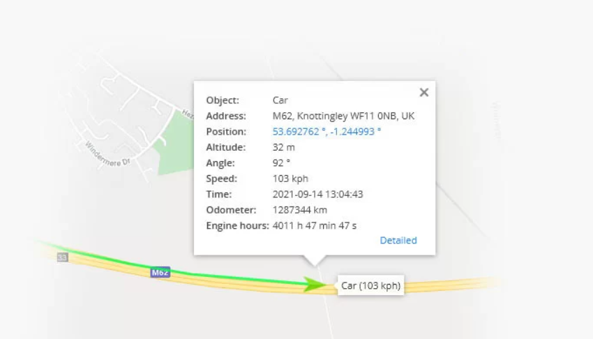
Seguimiento en tiempo real
El modo de seguimiento en tiempo real muestra datos en directo de los objetos rastreados. La información se actualiza cada diez segundos sin necesidad de recargar la página ni volver a iniciar sesión.
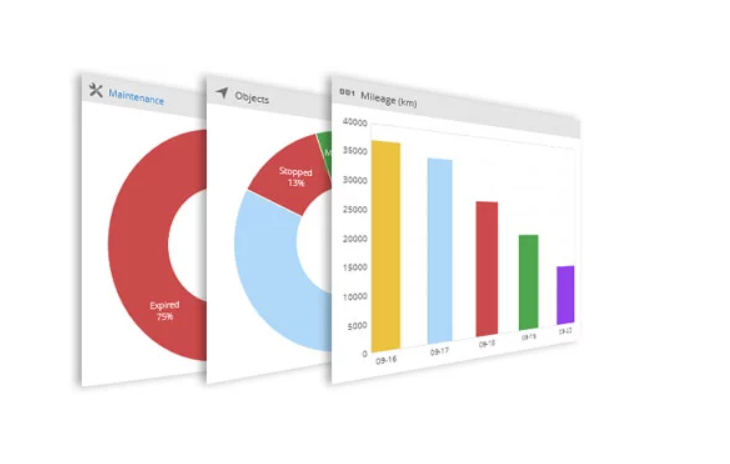
Panel de Control
Visualice, analice y muestre datos importantes de la cuenta. Supervise objetos, eventos, mantenimiento y kilometraje desde una ubicación centralizada.
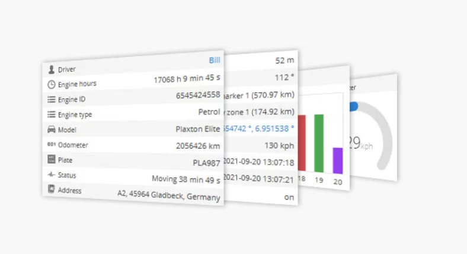
Widgets Interactivos
Información reciente actualizada cada diez segundos. Permiten enviar comandos remotos y ver gráficos de kilometraje sin recargar la página web.
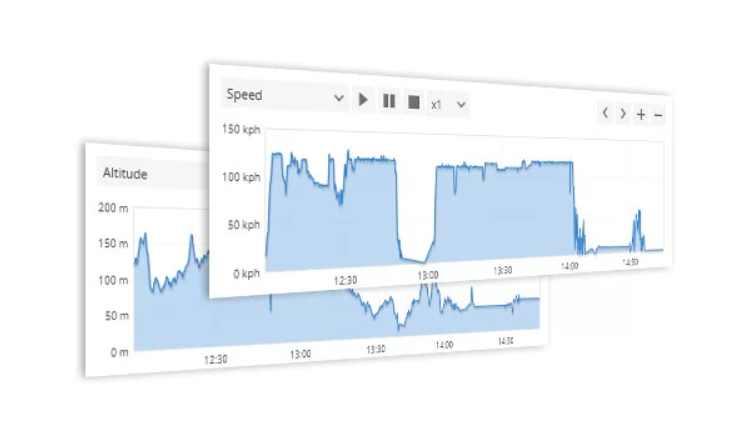
Control de Sensores
Lectura de datos CAN, nivel de combustible, temperatura, iButton y RFID con mediciones precisas calibradas para cada tipo de activo.
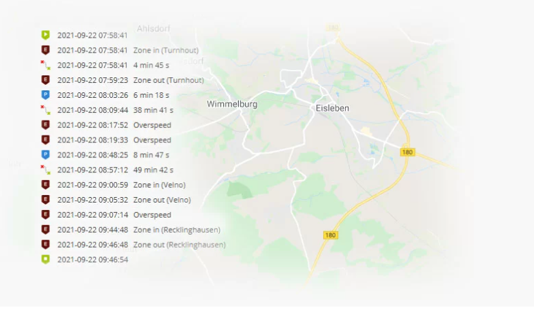
Gestión de Eventos
Notificaciones instantáneas por SMS, correo o push ante actividades críticas, permitiéndole reaccionar de inmediato ante cualquier situación.
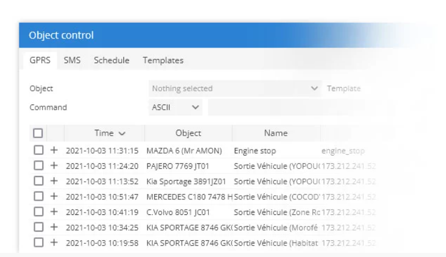
Control Remoto
Control mediante comandos GPRS/SMS. Permite acciones críticas como el apagado de motor y otras funciones de seguridad de forma remota.
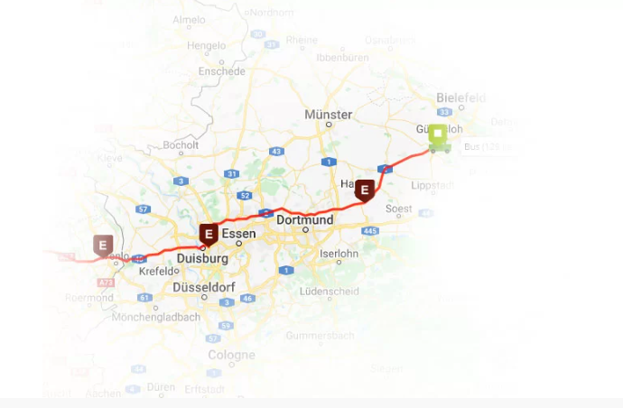
Historial Detallado
Visualice todos los datos almacenados de los dispositivos: velocidad, ubicación, paradas e informes. Exporte los datos en formatos HTML o XLS.
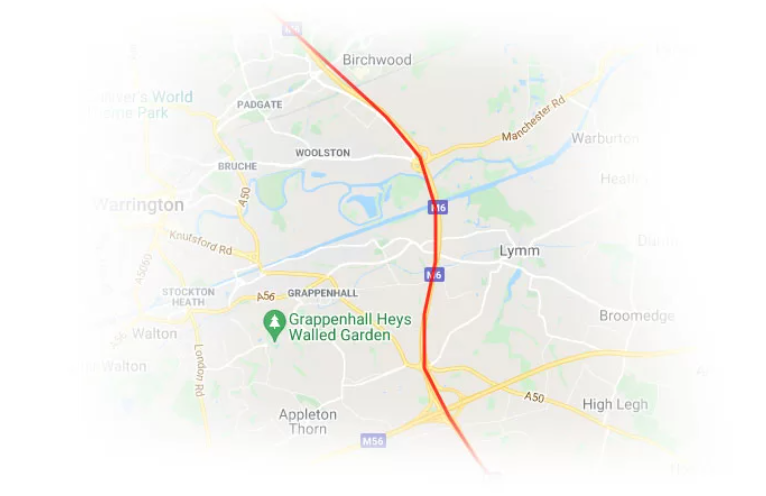
Control de Rutas
Dibuje recorridos virtuales y reciba alertas si el vehículo se desvía. Herramienta fundamental para analizar la adherencia logística.
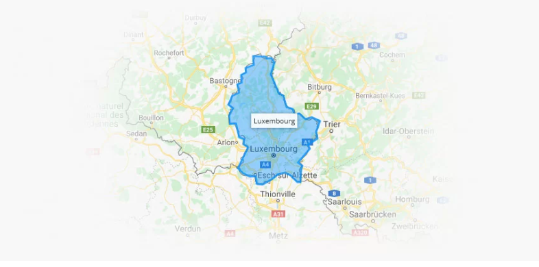
Geocercas Virtuales
Cree perímetros virtuales en áreas geográficas de interés. Controle entradas o salidas del área delimitada con notificaciones automáticas.
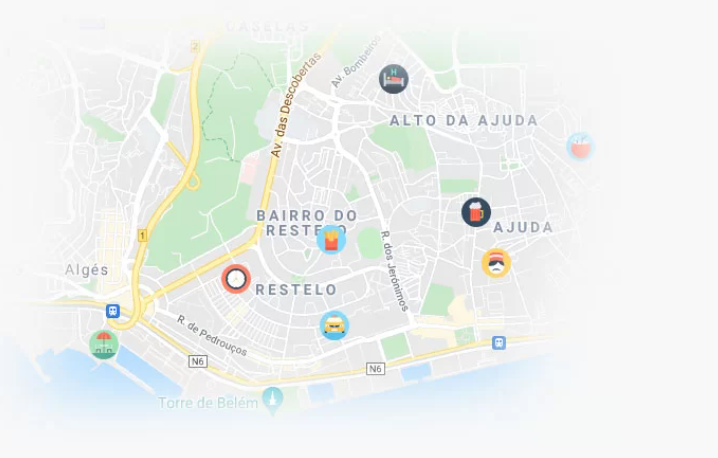
Puntos de Interés (POI)
Marque lugares útiles en el mapa. Añada nombres, descripciones e imágenes para identificar ubicaciones clave para su operación.
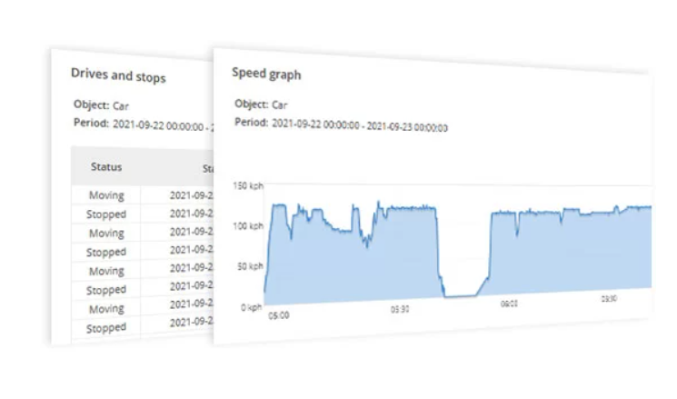
Informes Avanzados
Obtenga reportes detallados sobre viajes, consumo y comportamiento al volante. Programables para envío automático por correo electrónico.
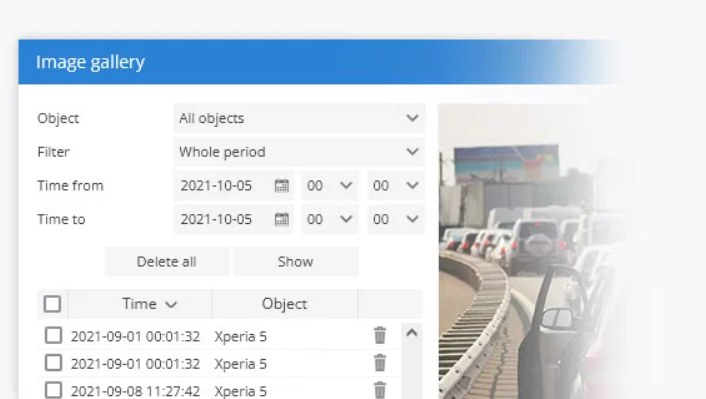
Galería Multimedia
Almacene imágenes y vídeos enviados por cámaras o smartphones. Vital para investigación de incidentes y seguridad del conductor.
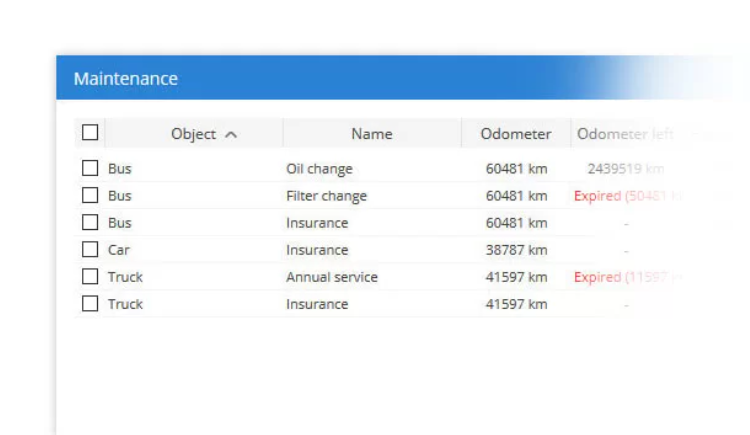
Gestión de Tareas
Gestión de entradas relacionadas con el trabajo pendiente. Establezca direcciones, prioridad y estado, gestionables desde la app móvil.
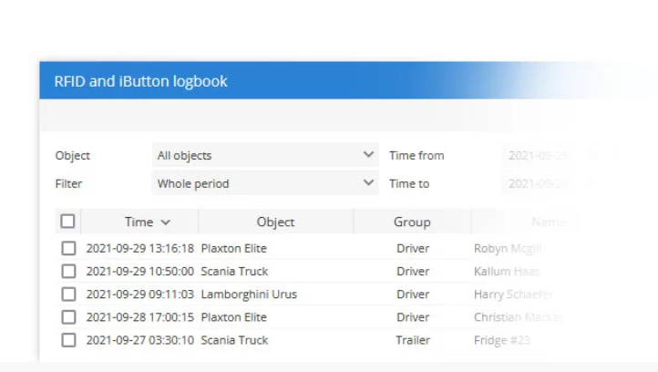
Libro de Registro
Control de conductores, remolques y pasajeros mediante tecnología RFID e iButton. Gestione cambios y datos exportables para análisis.
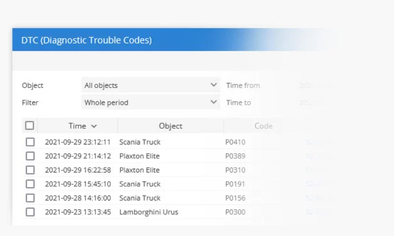
Diagnóstico (DTC)
Visualice códigos de error OBD de forma remota. Determine el tipo de avería del vehículo sin necesidad de inspección física inicial.
Mantenimiento
Recordatorios automáticos para servicios de rutina como cambios de aceite o inspecciones técnicas. Mantenga su flota en óptimas condiciones.
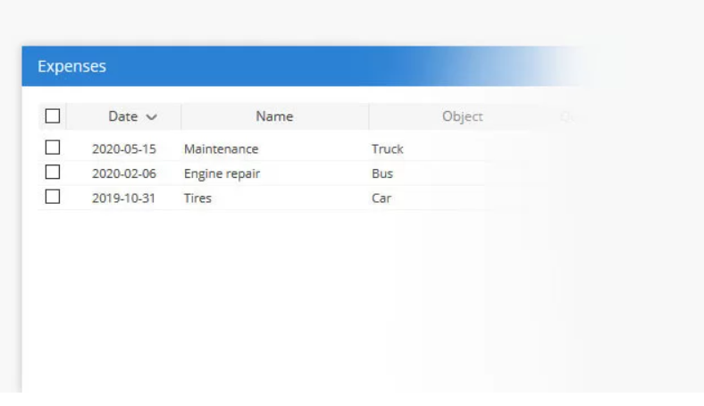
Gestión de Gastos
Registre y evalúe la inversión en mantenimiento de cada objeto. Analice el beneficio económico del uso del vehículo con informes detallados.
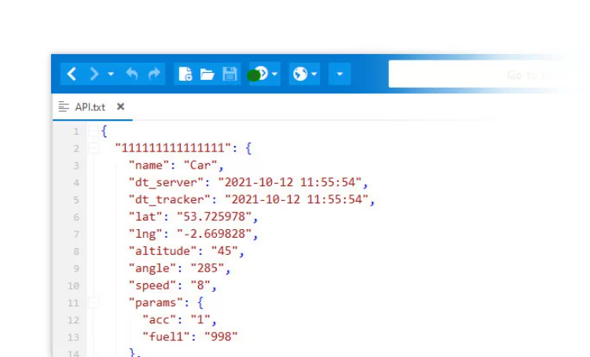
Integración API
API HTTP robusta para integrar datos de seguimiento con sus propios sistemas empresariales de forma automatizada.
¿Por qué elegir Vikar GPS?
Somos una empresa Valdiviana con presencia consolidada en todo el sur de Chile. Desde 2015, nos hemos diferenciado por brindar una atención inmediata y personalizada, eliminando las barreras de distancia que imponen las grandes corporaciones nacionales.
Nuestra misión es ser el socio tecnológico que cuida su patrimonio. Nos preocupamos por cada cliente, asegurando que su operación nunca se detenga y brindando soluciones a la medida de la zona.
Control Total de Combustible
Implementamos sensores de varilla de alta precisión que detectan extracciones y optimizan el consumo, ahorrando costos operativos reales.
Integración API & ERP
Sus datos no están aislados. Conectamos nuestra plataforma con sus sistemas internos (ERP) vía API para automatizar su logística.
Soporte Regional Real
Atención técnica en terreno desde Valdivia hasta Chiloé, sin esperas ni desplazamientos de largas distancias.
Compromiso Humano
Atención directa por expertos que conocen su zona y se aseguran de que su inversión sea eficiente y segura.
Excelencia Tecnológica
Utilizamos hardware de alta gama y marcas líderes a nivel mundial para garantizar la máxima durabilidad y precisión en cada reporte de telemetría.
- ✓ Conexión con +32 satélites en tiempo real para ubicación milimétrica.
- ✓ Soporte multi-constelación (GPS, GLONASS, Galileo, BeiDou).
- ✓ Transmisión de datos cada 10 segundos sin costos ocultos.
- ✓ Hardware robusto preparado para el clima del sur de Chile.
"Desde 2015 conectando el sur con tecnología de clase mundial."